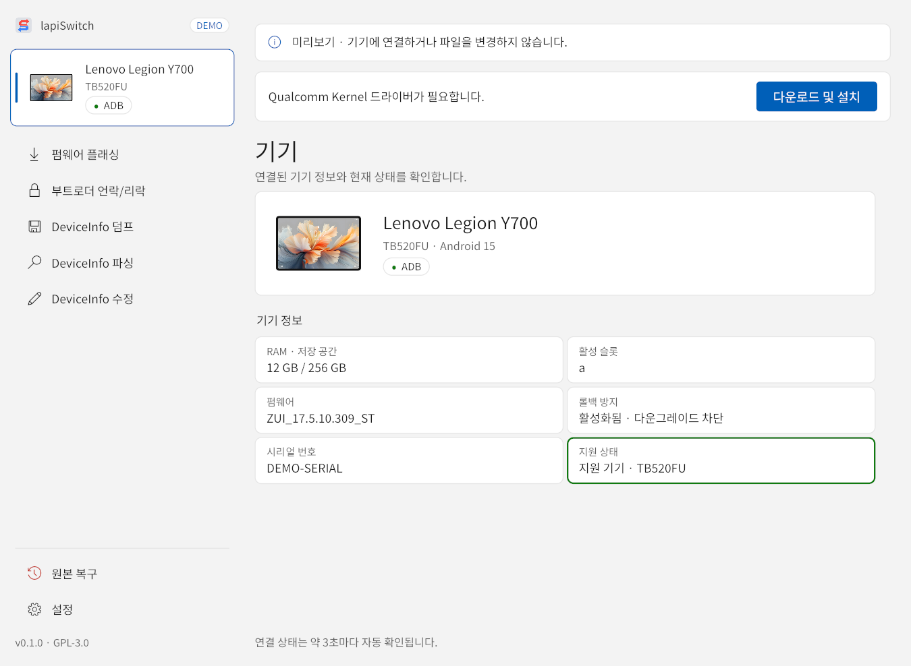
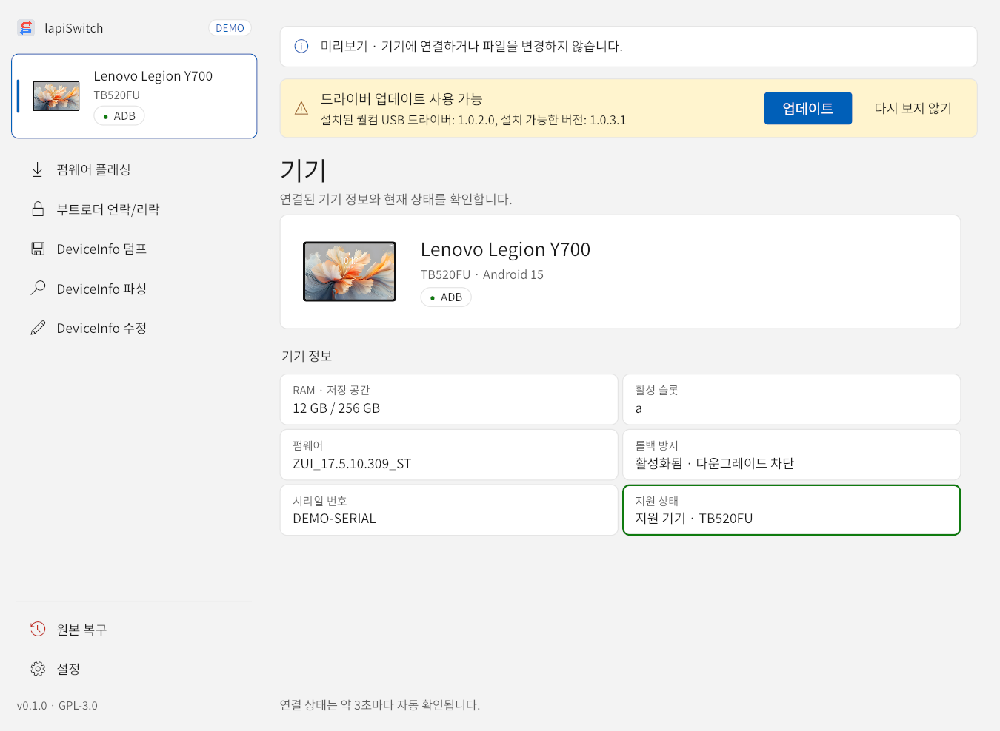
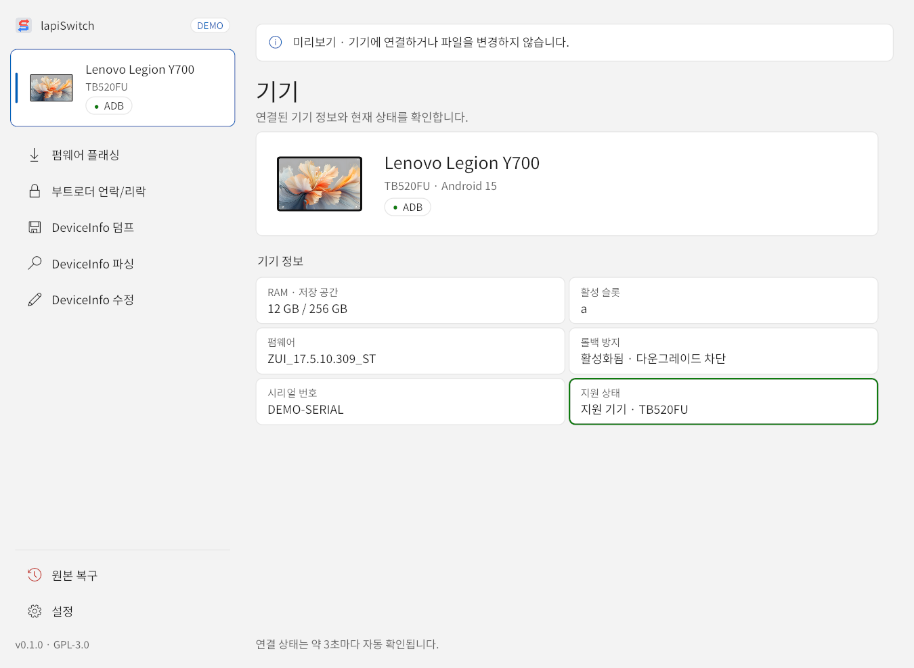
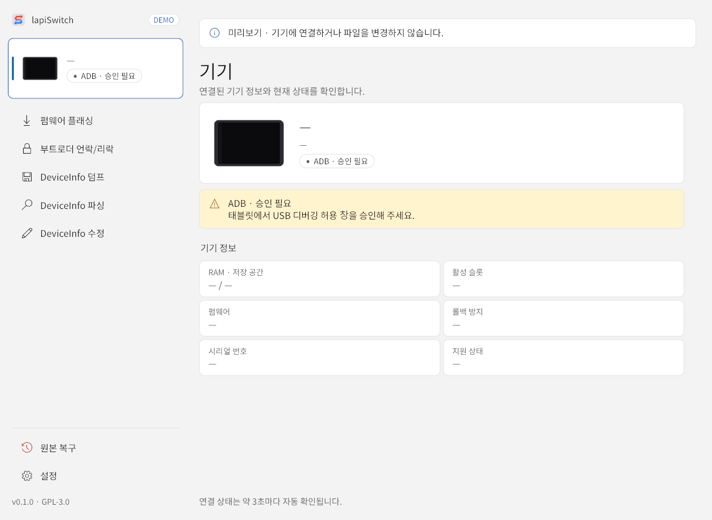
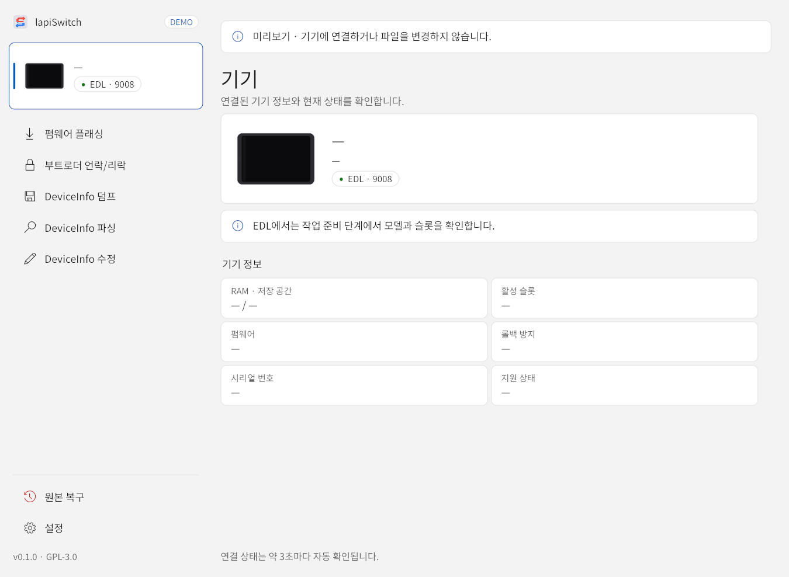
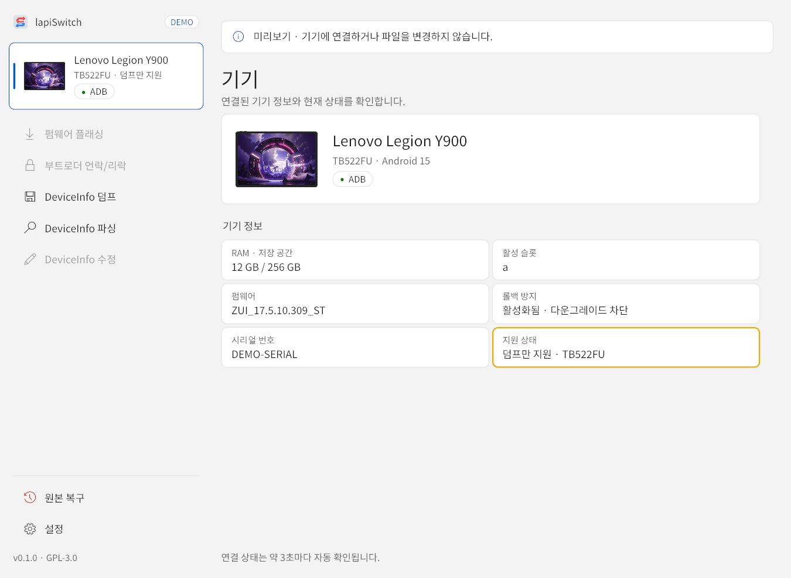
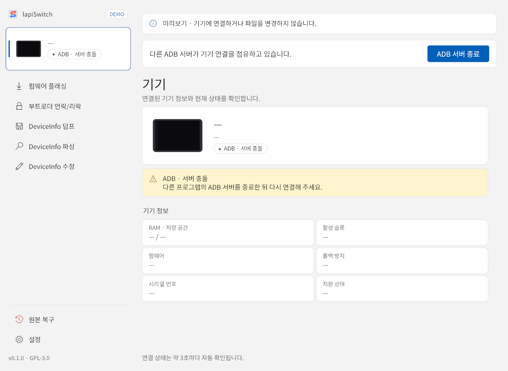
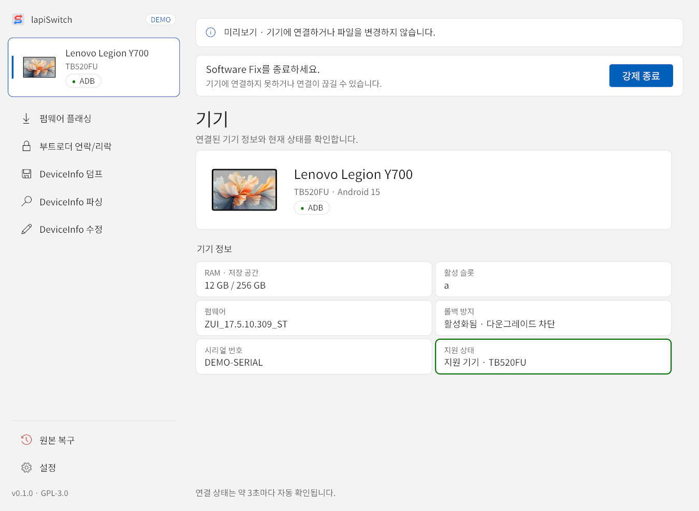
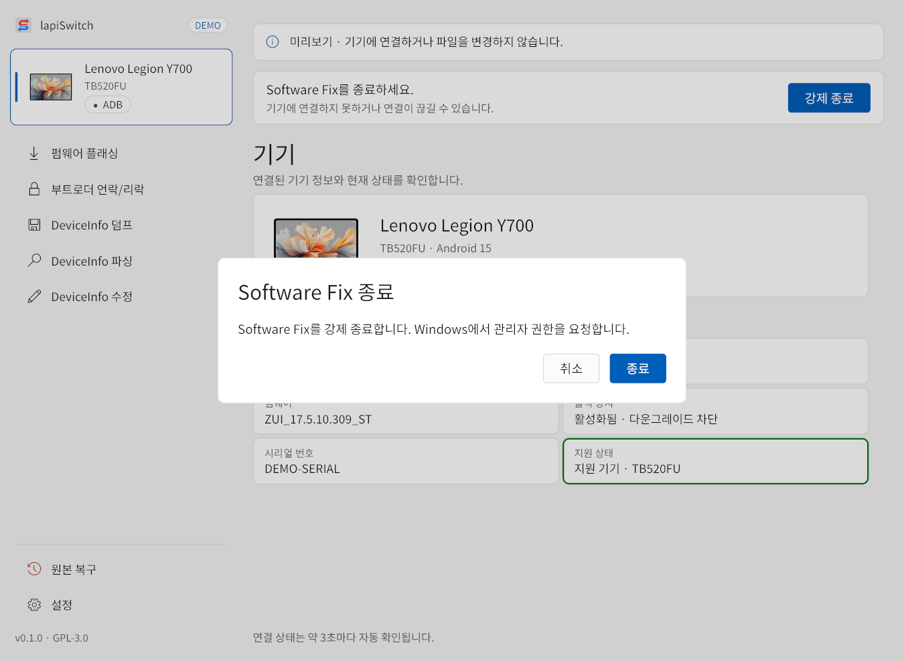

1시작하기 전에
lapiSwitch는 태블릿의 DeviceInfo와 파티션을 직접 다루는 도구입니다. 아래 내용을 모두 이해한 뒤에 시작하세요.
- 펌웨어·리전 변경으로 부팅 불가(벽돌), 기기 손상, 데이터 손실이 생길 수 있으며 복구를 보장하지 않습니다.
- 펌웨어 플래싱(리전 변경)과 부트로더 언락/리락을 하면 사용자 데이터가 반드시 초기화됩니다. 태블릿의 앱·사진·계정이 모두 삭제됩니다.
- DeviceInfo의 보안·구조 필드를 잘못 바꾸면 부팅되지 않거나 보안 상태가 바뀔 수 있습니다.
- 제조사 보증이 무효가 되거나 수리·지원이 제한될 수 있습니다.
- lapiSwitch는 연구·실험용 비공식 도구이며 Lenovo의 공식 소프트웨어가 아닙니다. 법령이 허용하는 범위에서 어떠한 보증 없이 ‘있는 그대로’ 제공됩니다.
작업 전에 사진·문서 같은 개인 파일은 PC나 클라우드에 따로 옮겨 두세요. 앱이 만든 원본 백업 폴더와 로그는 작업이 끝난 뒤에도 지우지 말고 보관하세요. 원본 복구에 꼭 필요합니다.
작업 한눈에 보기
앱의 왼쪽 메뉴에서 작업을 고릅니다. 파싱을 뺀 모든 작업은 먼저 원본 파티션을 백업하고, TWRP에서 DeviceInfo를 다룬 뒤 원본 구성(GPT·Recovery·vendor_boot)을 되돌립니다.
공식 펌웨어를 설치하면서 리전을 바꿉니다. 데이터 초기화.
부트로더 언락/리락Unlock·Critical Unlock 플래그만 바꿉니다. 데이터 초기화.
DeviceInfo 덤프DeviceInfo를 파일로 저장합니다. 데이터 유지.
DeviceInfo 파싱저장된 파일을 필드별로 봅니다. 기기 불필요.
DeviceInfo 수정필드를 직접 고칩니다. 데이터는 바꾸는 필드에 따라 다름.
이어하기와 원본 복구중단된 작업을 잇거나 원래 구성으로 되돌립니다.
사용자가 할 일은 설정을 고르고, 중간에 나오는 재부팅 확인창을 확인하고, USB 연결을 끝까지 유지하는 것입니다.
2준비물과 지원 조건
| 항목 | 조건 |
|---|---|
| PC 운영체제 | Windows x64 전용 |
| 태블릿 | Lenovo TB520FU(lapis): 모든 작업 지원Lenovo TB522FU: DeviceInfo 덤프·파싱만 지원 (실기기 미검증) 다른 모델은 작업이 차단됩니다. |
| 설치된 내수롬(PRC) | TB520FU: ZUXOS_1.5.10.186 이하, 이전 PRC ZUI 계열도 허용TB522FU: 빌드 날짜 2026-10-26( …261026C) 이하 |
| 설치된 글로벌롬(ROW) | TB520FU: ZUI_18.5.10.037 이하TB522FU: 빌드 날짜 2026-10-20( …261020W) 이하 |
| 펌웨어 플래싱 | 설치할 공식 펌웨어를 압축 해제한 폴더 |
| 그 밖의 작업 | 기기에 맞는 EDL 로더 파일(.melf, .elf, .mbn). 보통 공식 펌웨어 폴더에 들어 있습니다. |
| 연결 환경 | 데이터 전송이 되는 안정적인 USB 케이블, 충분한 배터리, TWRP·드라이버를 내려받을 인터넷 연결 |
버전 상한은 지금 태블릿에 설치된 펌웨어의 기준이며, 적힌 버전·날짜까지는 허용합니다. 설치할 펌웨어 패키지는 앱이 따로 검사합니다. 순정롬으로 확인된 기기 펌웨어가 상한보다 새로우면 작업이 차단됩니다. 버전·리전을 순정롬으로 확인할 수 없으면 커스텀롬·GSI·테스트 빌드 가능성을 알리는 순정롬 확인 불가 창이 나타나고, 계속 진행을 골라야 이어집니다(진행 화면).
태블릿 미리 설정하기
- 태블릿 설정 → 태블릿 정보에서 빌드 번호를 여러 번 눌러 개발자 옵션을 켭니다. 메뉴 이름과 위치는 펌웨어 버전에 따라 조금 다를 수 있습니다.
- 개발자 옵션 → USB 디버깅을 켭니다.
- 배터리를 충분히 충전합니다. 작업 중 전원이 꺼지면 위험합니다.
- USB 허브나 연장선보다는 PC 본체의 USB 포트에 직접 연결하세요.
PC 미리 준비하기
- 펌웨어 플래싱을 하려면 목표 리전의 공식 펌웨어를 내려받아 압축을 풀어 둡니다. 앱에서는 압축 파일이 아니라 풀린 폴더를 선택합니다.
- Lenovo Software Fix나 다른 ADB 도구(안드로이드 스튜디오, 스크린 미러링 앱 등)는 종료합니다. 켜져 있으면 연결이 끊기거나 충돌할 수 있습니다. 앱이 감지하면 종료 버튼을 보여 줍니다(기기 연결과 기기 화면).
3설치와 드라이버
- GitHub Releases에서 Windows ZIP 파일과
.zip.sha256체크섬 파일을 내려받습니다. - 체크섬을 확인합니다. PowerShell에서 아래 명령을 실행한 결과가
.zip.sha256파일의 값과 같아야 합니다.Get-FileHash <내려받은 ZIP 파일 경로> -Algorithm SHA256 - ZIP의 압축을 풀고
lapiSwitch.exe를 실행합니다. 설치 과정은 없습니다. - USB 드라이버가 없으면 위쪽에 안내가 나타납니다. 다운로드 및 설치를 눌러 설치하세요. Windows가 관리자 권한을 요청합니다.

드라이버 업데이트 알림
드라이버가 설치되어 있으면 앱이 GitHub의 최신 Qualcomm 드라이버 릴리즈와 버전을 비교합니다. 더 새 버전이 있으면 노란 드라이버 업데이트 사용 가능 알림이 나타납니다.

- 업데이트 — 새 드라이버를 내려받아 설치합니다. 업데이트는 선택 사항이며, 알림이 떠 있어도 작업은 할 수 있습니다.
- 다시 보지 않기 — 이 버전의 알림을 숨깁니다. 더 새 버전이 나오면 다시 알립니다. 숨긴 뒤에도 설정 → USB 드라이버에서 업데이트할 수 있습니다.
- 인터넷에 연결되어 있지 않으면 알림 없이 넘어갑니다.
드라이버 방식은 설정 → USB 드라이버에서도 확인하고 바꿀 수 있습니다(설정).
- Kernel (기본값, LTBox와 같음): Qualcomm 직렬 드라이버를 사용합니다. 특별한 이유가 없으면 이 방식을 쓰세요.
- Userspace: WinUSB / libusb를 사용합니다. EDL(9008) 장치에 WinUSB 드라이버가 설치되어 있어야 합니다.
4기기 연결과 기기 화면
태블릿을 켠 상태로 USB에 연결하면 기기 화면에 정보가 나타납니다. 왼쪽 위의 기기 카드를 누르면 언제든 이 화면으로 돌아옵니다. 연결 상태는 약 3초마다 자동으로 다시 확인됩니다.

1 2 3 4 5 6 7- 1기기 카드 — 기기 이름, 모델 번호, 연결 상태 배지(
ADB,Fastboot,EDL,TWRP). 연결된 기기가 없거나 정보를 읽을 수 없으면 이름 자리에 “—”가 표시됩니다. - 2작업 메뉴 — 펌웨어 플래싱, 부트로더 언락/리락, DeviceInfo 덤프·파싱·수정. 지원하지 않는 작업은 흐리게 표시됩니다.
- 3원본 복구(원본 복구)와 설정(설정).
- 4기기 요약 — 기기 이름, 모델 번호, Android 버전, 연결 상태.
- 5기기 정보 — RAM·저장 공간, 활성 슬롯(a/b), 설치된 펌웨어, 롤백 방지 상태, 시리얼 번호.
- 6지원 상태 — 지원 기기인지, 덤프만 지원하는 기기인지 알려 줍니다.
- 7연결 상태 자동 확인 안내.
USB 디버깅 승인이 필요할 때
처음 연결하면 태블릿 화면에 “USB 디버깅을 허용하시겠습니까?” 창이 뜹니다. 이 컴퓨터에서 항상 허용을 체크하고 허용을 누르세요. 승인 전에는 상태가 ADB · 승인 필요로 표시되고 기기 정보가 “—”로 비어 있습니다.

EDL로 연결했을 때
EDL(9008) 모드에서는 기기가 모델 정보를 알려 주지 않아 이름과 모델이 “—”로 표시됩니다. EDL 상태에서도 작업을 시작할 수 있으며, 앱이 작업 초반에 기기 파티션을 읽어 모델과 슬롯을 확인합니다. Fastboot 상태에서는 작업을 시작할 수 없습니다.

TB522FU를 연결했을 때
TB522FU는 DeviceInfo 쓰기가 아직 검증되지 않아 덤프만 지원합니다. 기기 카드에 “덤프만 지원”이 표시되고, 펌웨어 플래싱·부트로더·DeviceInfo 수정 메뉴는 흐리게 바뀝니다. DeviceInfo 덤프와 파싱은 그대로 쓸 수 있습니다.

다른 프로그램과 충돌할 때
다른 프로그램의 ADB 서버가 기기를 붙잡고 있으면 ADB · 서버 충돌이 표시됩니다. 위쪽 안내의 ADB 서버 종료를 누르면 충돌하는 ADB 서버를 끄고 다시 연결합니다.

Lenovo Software Fix가 실행 중이면 기기 연결이 끊길 수 있어 종료 안내가 나타납니다. 강제 종료를 누르면 확인창이 뜨고, 종료를 누르면 Windows가 관리자 권한을 요청합니다.

